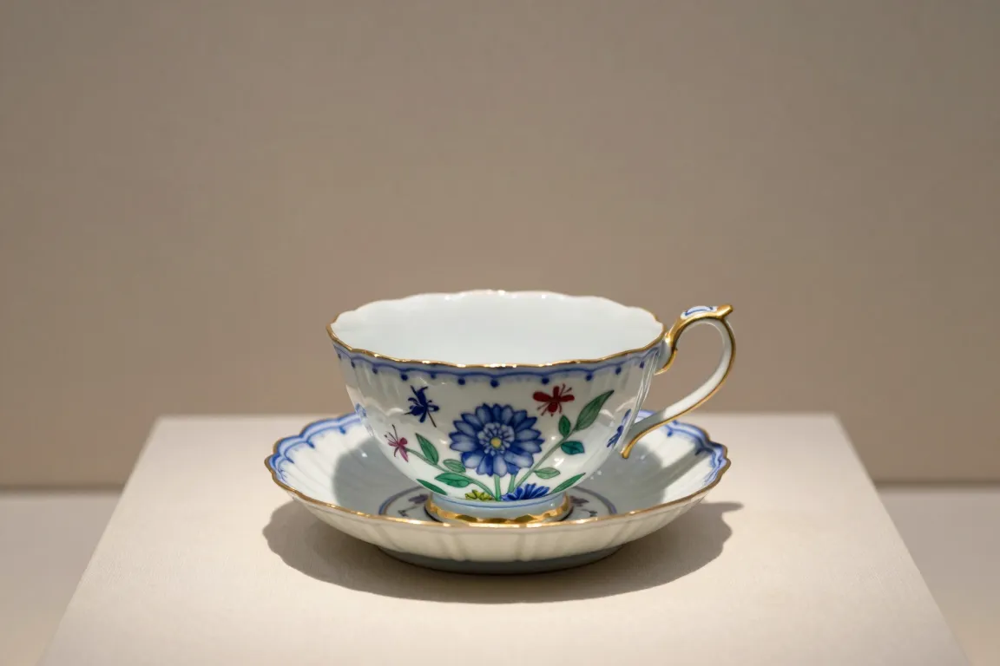

керамика · 1745–1830 · также: Английский чайный сервиз из мягкого фарфора, Чайный набор эпохи Георгов, Чайная посуда Боу и Вустера, Английский фарфоровый чайный сервиз
Первые английские фарфоровые чайные сервизы. Чайный набор из чашек без ручек, чайника, кувшинов и полоскательниц из мягкого фарфора или костяного фарфора, с синей росписью, эмалевыми цветами и золочёными венчиками.

Главная идея
Английские гончары делают для новых любителей чая целый чайный стол из фарфора: набор подобранных вещей в китайском или европейском виде.
Принципы дизайна
Делайте набор из 12–40 вещей из одного черепка и в одном узоре.
Делайте чайные чашки сначала без ручек и добавляйте ручки после примерно 1790 года.
Пишите цветы, птиц и китайские фигуры синим или эмалевыми цветами.
Выбирайте одну кайму на весь набор: золотую линию, синий пояс или фестончатый край.
Добавляйте золочение на венчик, ручку и шишку чайника.
Делайте чайник округлым на низком поддоне, с прямым или изогнутым носиком и крышкой с шишкой.
Берите мягкую стекловидную глазурь, которая собирается в углах и показывает оттенок черепка.
Сначала копируйте китайские и мейсенские образцы, затем проектируйте новую английскую форму.
Антипаттерны
Толстая тяжёлая стенка из каменной массы песочного цвета